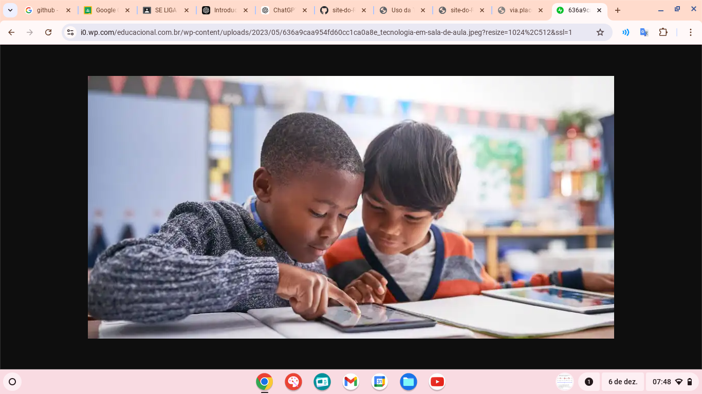
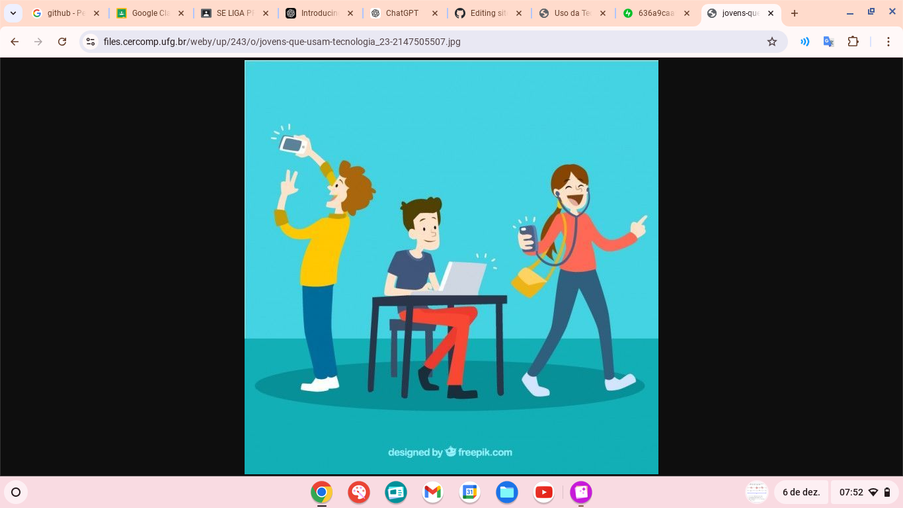

Pontos Positivos
A tecnologia tem o potencial de facilitar o aprendizado, tornando-o mais acessível, interativo e personalizado. Ferramentas como plataformas de ensino, simuladores e gamificação permitem que os alunos aprendam no seu ritmo.
Pontos Negativos
Apesar dos benefícios, a tecnologia na educação também apresenta desafios. A falta de acesso a dispositivos e internet pode aumentar desigualdades. Além disso, o excesso de uso pode causar distrações e dependência.